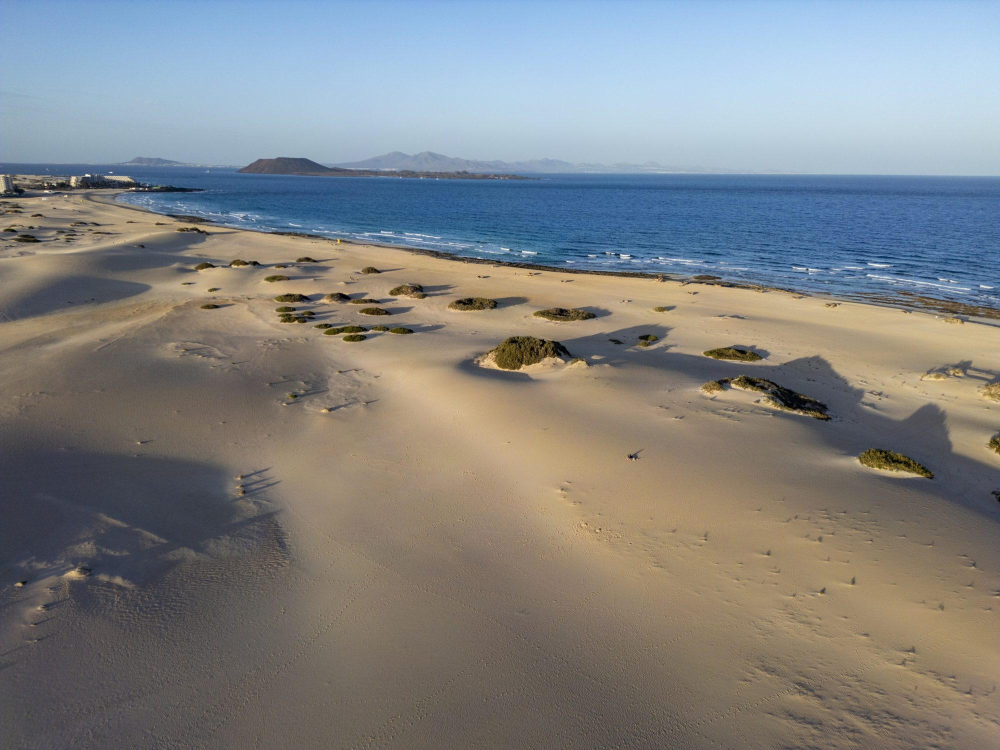
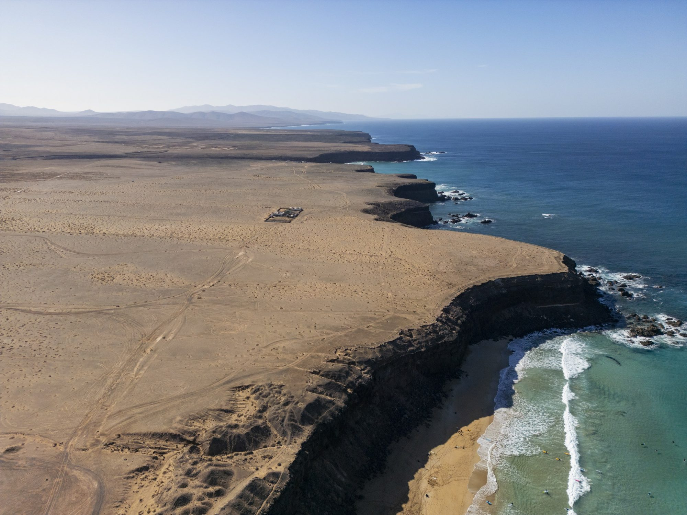
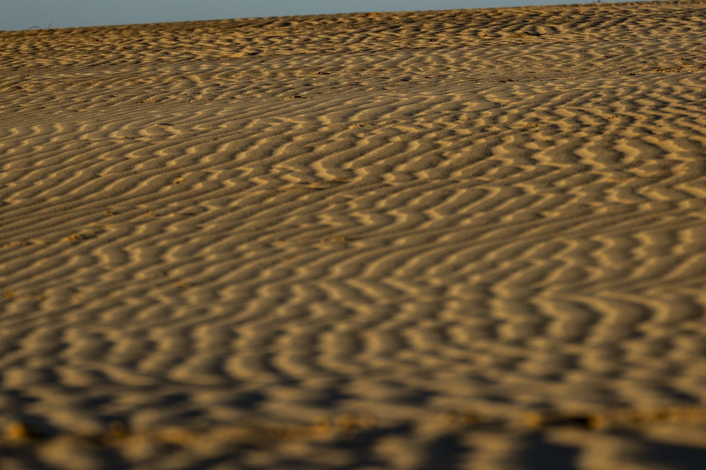
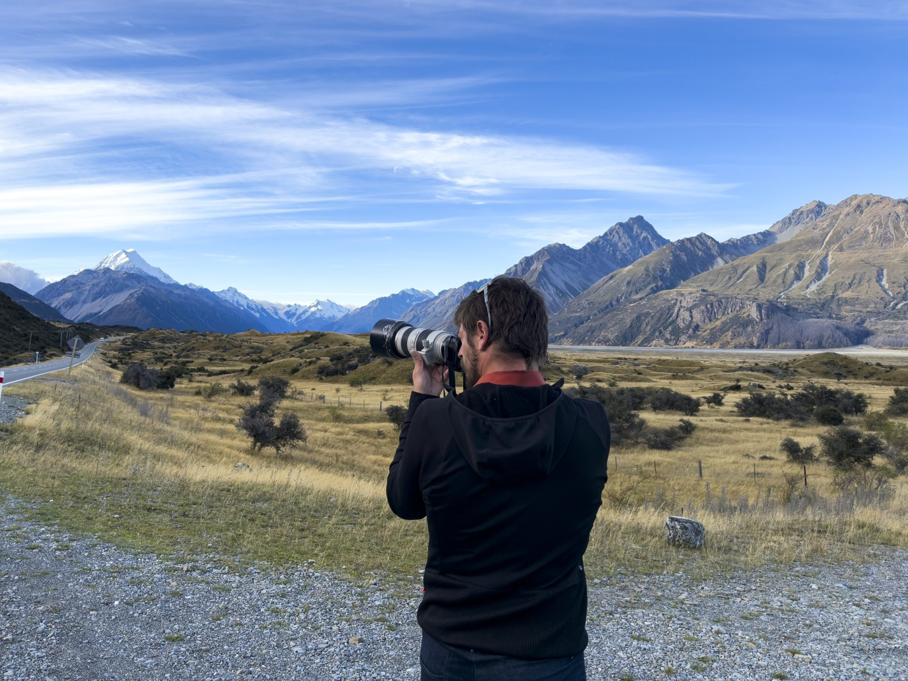

A VISUAL COLLABORATION · FITUR 2027
Oman, through
the people who
know it.
Original photography and film to bring the country’s landscapes, experiences and living culture closer to the world.
EXPLORE THE PROPOSAL ↘JUAN AIZPURU · PREVIOUS PORTFOLIO IMAGE · ILLUSTRATIVE
THE OPPORTUNITY
Invite the world
to experience Oman.
A country of coastlines, mountains, desert and living traditions — experienced through the people who call it home.
I propose travelling to Oman to create an original collection of photography and film, developed together with your team and local guides. The work would bring together the landscapes you want to share with the people and experiences that make each place distinctive.
Use the material to develop your own destination campaigns, or work with me and my team to create a complete campaign around your priorities.
SEE WHAT WE CAN CREATE ↗A PROPOSAL SHAPED AROUND YOUR PRIORITIES
Places that inspire.
People who connect.
From mountain villages and coastal journeys to heritage, hospitality and the desert — a visual approach that can adapt to the destinations and audiences you want to reach.

WHAT WE OFFER
Created in Oman.
Made for your needs.
A flexible production shaped with the Ministry and its local partners, designed for use across your destination promotion.
01Destination photography & film+
Original images of Oman’s landscapes, places to stay, outdoor experiences and cultural encounters, created on location around your chosen priorities.
02Stories with local voices+
Work with local guides, hosts, artisans and communities to portray the people behind the experience, with their participation and the appropriate permissions.
03A visual collection for your team+
Photography and film for your team to adapt to destination promotion, presentations, digital channels and campaigns. Formats, scope and licensing are agreed together.
04A complete campaign+
If useful, we can also develop the creative concept and produce a complete campaign, with your team and local production partners, for the audiences you want to reach.
SELECTED PORTFOLIO
A visual language for
the journey ahead.
All images shown are Juan Aizpuru’s previous work, created outside Oman. They illustrate the photographic approach; new work would be made in Oman.



HOW WE WORK
One brief.
Built together.
We begin with your audiences, destinations and campaign objectives. Together we shape the story and identify the local partners, logistics and locations needed to bring it to life.
Production can be planned over the time the project requires, from a focused assignment to a longer journey. Your team helps open the door to the people and experiences you want to share.
Deliverables, production responsibilities and image rights are agreed before work begins.
ABOUT JUAN AIZPURU
A personal eye.
A professional team.
I’m Juan, a photographer and filmmaker working across travel, people and the outdoors. I collaborate with local teams and can bring an experienced production crew when the project calls for it.
My aim is to create useful, compelling visual work that helps a destination tell its own story.
EXPLORE MY WORK ↗Made with the people
who know the place.
FITUR 2027 · MADRID
Let’s create something
meaningful for Oman.
I would love to hear your team’s priorities and explore how we could tell Oman’s stories together.
VIEW MY PORTFOLIO ↗Ministry of Heritage & Tourism · Stand 8C03, Pavilion 8